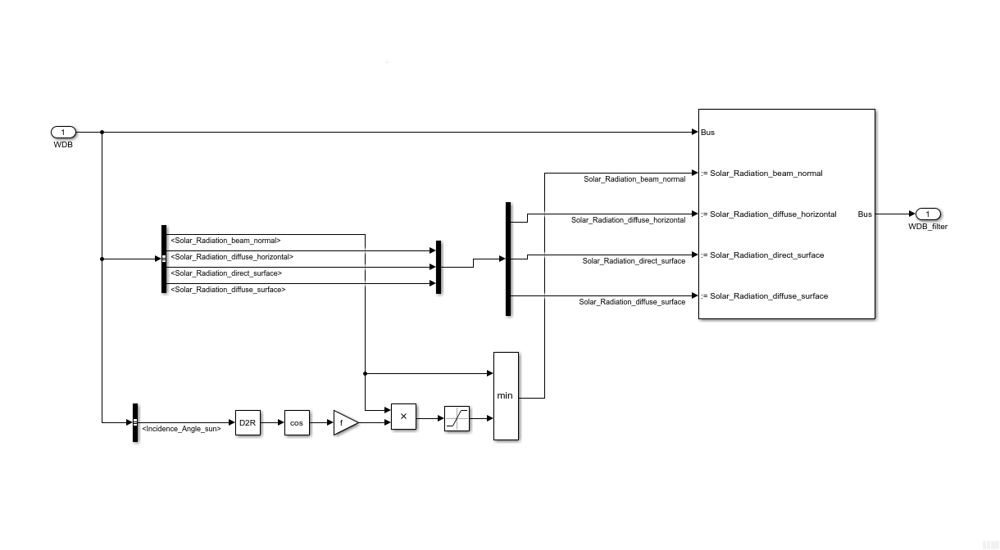
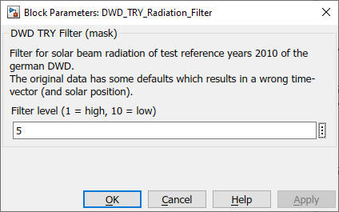

DWD_TRY_Radiation_Filter
Path: CARNOT/Weather
Purpose:
Filter peaks in solar beam normal radiation in Test Reference Years.
Description:
The peaks occur because the time comlumn in the DWD reference years is not
correct. For details see
Hiller 2015. More details are described in
Chapter 2.6 Weather Data
Records - German TRY Dataset 2011 in 2. Basic Concepts.
The filter sets the beam normal radiation reduces the solar beam radiation to
a filter parameter f (1..10) times the cosine of the solar zenith angle.

Input:
| WDB | : | Weather Data Bus |
Output:
| WDB_filter | : | Weather Data Bus with filtered beam radiation |
Parameters and Dialog Box:

Examples:
Open the example explorer from the Matlab command window
ExampleBrowser
or load the examples via the CARNOT library.
Characteristics:
| Direct Feedthrough | : | Yes |
| Sample Time | : | Inherited from driving block |
| Vectorized | : | No |